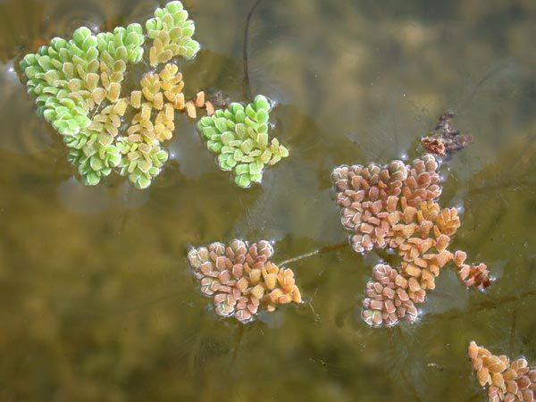

एज़ोलाWater Fern
Azolla pinnata · Salviniaceae · FLR-0090

- Scientific name
- Azolla pinnata R. Br.
- Family
- Salviniaceae
- Hindi
- एज़ोला
- Status here
- native
- IUCN
- not evaluated
When to look कब देखें
Present all year.
एज़ोला / Water Fern / Azolla
Azolla pinnata R. Br. — Salviniaceae
एज़ोला (वॉटर फर्न / मॉस्किटो फर्न / जैविक खाद) — पूर्वी उत्तर प्रदेश के तालाबों की सतह, धान के भरे हुए खेतों और मौसमी गड्ढों में पाया जाने वाला एक बहुत ही छोटा, तैरने वाला जलीय फर्न (tiny floating aquatic fern) है। इसका आकार केवल 1 से 2.5 सेमी होता है। यह पानी की सतह पर हरे और गहरे ईंट जैसे लाल रंग के त्रिकोणीय पत्तों का एक सुंदर कालीन (red-green mosaic carpets) बना देता है। एज़ोला की सबसे बड़ी विशेषता यह है कि यह एक फर्न है, कोई फूल देने वाला पौधा नहीं है, और यह नाइट्रोजन-स्थिरीकरण करने वाला इकलौता फर्न है। इसकी पत्तियों के अंदर पाई जाने वाली सूक्ष्म खोखली गुहाओं में 'एनाबीना एज़ोली' (Anabaena azollae) नामक एक नील-हरित शैवाल (cyanobacterium) रहता है, जो हवा की नाइट्रोजन को सोखकर उसे अमोनिया में बदल देता है। इस सहजीवन (nitrogen-fixing symbiosis) के कारण एज़ोला में प्रचुर मात्रा में प्रोटीन और नाइट्रोजन पाया जाता है, जिसके कारण पूर्वी उत्तर प्रदेश के किसान इसे धान की खेती में एक अत्यंत उपयोगी जैव-उर्वरक (azolla biofertilizer) और दुधारू पशुओं के पौष्टिक चारे के रूप में उगाते हैं।
Quick Identification त्वरित पहचान
| Feature | Description |
|---|---|
| Plant habit | Tiny, floating, branched annual or perennial aquatic fern, measuring 1.0–2.5 cm, forming dense velvet mats |
| Fronds (Leaves) | Scale-like, arranged in two overlapping rows; green in winter/shade, turning dark brick-red in hot sunlight |
| Roots | Simple, unbranched, hair-like roots (1–3 cm) hanging freely in the water column below the leaves |
| Spore production | Non-flowering; reproduces via spores contained in tiny globular structures (sporocarps) under the leaves |
| Symbiosis | Has a symbiotic relationship with nitrogen-fixing cyanobacteria inside leaf cavities |
Field tip: Look at a village pond in September. Look for areas of water completely covered by a thick, dark red or reddish-green carpet of tiny, star-shaped floating plants. Scoop one up; you will see it has feather-like branches and a single cluster of black hair-like roots hanging underneath, but no flowers.
Morphology आकारिकी
Biometrics (typical measurements of mature plants in the northern Indian plains):
| Measurement | Range |
|---|---|
| Frond length (diameter) | 1.0–2.5 cm |
| Frond thickness | 1.0–2.0 mm |
| Root length | 1.0–3.0 cm |
| Doubling time (growth) | 3–5 days |
| Nitrogen content (dry) | 3–5 % |
| Protein content (dry) | 20–25 % |
Fronds and Stem: Stems are thin, fragile, branching in a pinnate (feather-like) pattern. The leaf scales have an upper fleshy photosynthetic lobe and a lower thin submerged lobe.
Symbiotic Cavities: The upper leaf lobes contain cavities filled with mucus, hosting filaments of the cyanobacterium Anabaena azollae which provides nitrogen in exchange for sugars.
Roots: A single bundle of fine roots hangs from each branch node, absorbing minerals directly from the water.
Associated Species / Interactions संबंधित प्रजातियाँ
- Nitrogen-fixing Symbiosis: Lives in obligate mutualistic symbiosis with the cyanobacterium Anabaena azollae, which provides up to 50–100 kg of nitrogen per hectare annually when decomposed in soil.
- Paddy field companion: Planted in flooded rice fields to shade out competitive weeds and provide natural fertilizer.
- Consumers: Eaten by herbivorous waterbirds, domestic ducks, and pond snails.
Pests and Diseases कीट और रोग
- Azolla Webworm: Caterpillars of Nymphula moths spin silk webs, pulling the small fronds together and feeding on them, causing patches to turn brown and decay.
- Fungal Blight: Caused by Sclerotium during extreme hot, humid monsoon weeks, rotting the mats.
Traditional and Ethnobotanical Use पारंपरिक और नृवंशवनस्पति उपयोग
- Paddy Bio-fertilizer: Farmers seed fresh Azolla into flooded rice fields. It grows fast, covers the water to prevent weeds, and when the field dries, it decays in the soil, releasing rich nitrogen for the rice crops.
- High-Protein Cattle Feed: Harvested daily from farm ponds, washed, and mixed with dry straw to feed milking cows and buffaloes, which increases daily milk yield by 10-15% due to its high protein content.
- Poultry and Duck Feed: Fed fresh to backyard domestic ducks and chickens as a natural, vitamin-rich protein feed that improves egg shell thickness.
- Natural Mosquito Control: The dense, interlocking mats completely cover the water surface, preventing mosquito larvae from reaching the air to breathe, thereby reducing local mosquito populations.
Expected Locally स्थानीय रूप से अपेक्षित
Not a field record. Written from published accounts for eastern Uttar Pradesh. No confirmed local sighting yet — if you have seen it, that is what the atlas needs.
अभी तक स्थानीय पुष्टि नहीं। यह विवरण प्रकाशित स्रोतों से है, किसी अवलोकन से नहीं।
A common native floating fern in agricultural ponds and managed rice plots across the Basti district, regularly observed in the Harraiya and Vikramjot blocks. Agriculture officers in Basti actively promote the cultivation of Azolla in low-cost concrete tanks (Azolla beds) as a cheap supplement for cattle feed and organic farming fertilizer. During September, many village ditches turn bright red due to dense Azolla mats.
Distribution वितरण
Global range: Native to tropical and subtropical South Asia, Southeast Asia, East Africa, and northern Australia.
In India: Widespread in all plains, wetlands, and flooded rice cultivation zones.
In Uttar Pradesh: Abundant state-wide, particularly in eastern districts with high rice cultivation.
In Basti district / eastern UP: Widespread across all agricultural blocks.
Research Questions शोध प्रश्न
Anyone can investigate these | कोई भी इन प्रश्नों की जाँच कर सकता है
- How many days does a 50 g sample of fresh Azolla take to double its weight when grown in a bucket of pond water? — Record weight daily (Excellent Child-Friendly Research Activity!).
- Does the color of Azolla mats change from green to dark red when exposed to full midday sun compared to deep tree shade? — Monitor color shifts in different light zones.
- What is the percentage increase in milk yield in a cow fed with 1 kg of fresh Azolla daily for two weeks? — Conduct livestock feeding trials.
- How many mosquito larvae survive in a bowl of water covered with a complete Azolla mat versus an open water bowl? — Test larval survival.
- Does the growth of Azolla in a container increase when a small handful of cow dung compost is added to the water? / क्या पानी में थोड़ा गाय का गोबर मिलाने से एज़ोला की वृद्धि दर बढ़ जाती है? — Conduct fertilization trials.
Similar Species मिलती-जुलती प्रजातियाँ
| Species | How to tell apart | comparison |
|---|---|---|
| Common Duckweed (Lemna minor) | Has simple, flat green oval fronds (no branches); lacks red color; has no nitrogen-fixing symbiosis | जल-मसूर — बहुत छोटा आकार, बिना शाखाओं के पत्ते |
| Water Lettuce (Pistia stratiotes) | Much larger (5-20 cm); looks like a floating green cabbage; leaves are thick and velvety | जलकुंभी (छोटी) — बड़ा आकार, मखमली पत्तियां |
| Water Clover Fern (Marsilea quadrifolia) | Creeping mud fern; leaves look like a 4-leaf clover; rooted in soil, not floating | सुुुसुनी / चौपतिया — चार पत्तियों वाला कीचड़ फर्न |
Field rule: Tiny floating triangular aquatic fern (1.0–2.5 cm) forming green-red mosaic mats on water, with branched feather-like leaves and hanging hair-like roots, is the Water Fern (Azolla).
Taxonomy & Classification वर्गीकरण
Original description. The Scottish botanist Robert Brown described the Water Fern as Azolla pinnata in 1810 in his Prodromus Florae Novae Hollandiae et Insulae Van-Diemen (p. 167). The type locality was listed as Australia. The genus name Azolla is derived from the Greek azo (dry) and ollyo (kill/die), referencing its death when water dries up. The specific name pinnata is Latin for feathered, referring to the branching pattern.
Subspecies. Monotypic — no subspecies are currently recognised in the main index, though the local variety Azolla pinnata var. imbricata is common in South Asia.
Family and order placement. Placed in the order Salviniales, family Salviniaceae (floating fern family), which contains only the two genera Azolla and Salvinia.
Phylogenetic notes. Azolla is an ancient heterosporous fern lineage. It is famous for the "Azolla Event" in geological history (approx. 49 million years ago), where massive mats growing in the Arctic Ocean captured carbon dioxide, contributing to a global transition from a greenhouse to an icehouse climate.
IUCN status rationale. Not evaluated (NE) by the IUCN Red List. It has a secure, abundant global population.
Photo Gallery फोटो गैलरी
References संदर्भ
- Brown, R. (1810). Prodromus Florae Novae Hollandiae. Johnson, London, p. 167. [original description]
- Brandis, D. (1906). Indian Trees (includes key fern family divisions). Archibald Constable & Co., London.
- Kirtikar, K. R. & Basu, B. D. (1935). Indian Medicinal Plants. Vol. IV. Lalit Mohan Basu, Allahabad.
- Lumpkin, T. A. & Plucknett, D. L. (1980). Azolla: Botany, Physiology, and Use as a Green Manure. Economic Botany.
- World Flora Online (2024). Azolla pinnata details.
- GBIF Occurrence Data — Azolla pinnata, India (2010–2025).
Source file: species/flora/aquatic/azolla.md